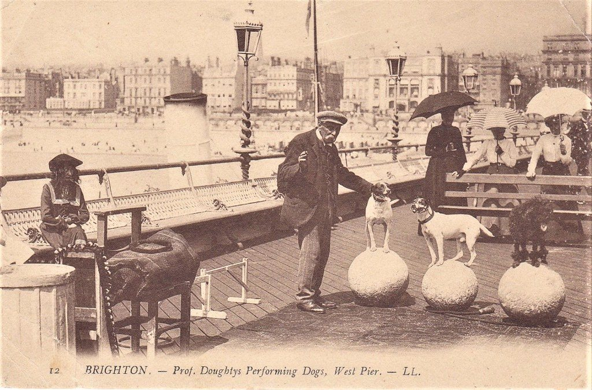

View 11 of 66
The latest damaged view of the pier, No. 11
Originally: 1908 professor Doughtys Performing Dogs, West Pier Brighton L.L 12 Postcard SUSSEX by mark's vintage topographical postcards
Condition report: undated. Damaged in every tense.
- Artist
- mark's vintage topographical postcards
- Original title
- 1908 professor Doughtys Performing Dogs, West Pier Brighton L.L 12 Postcard SUSSEX
- Source
- Flickr (via Openverse)
- Licence
- Public Domain Mark 1.0
Discuss this view
GitHub sign-in needed to comment.